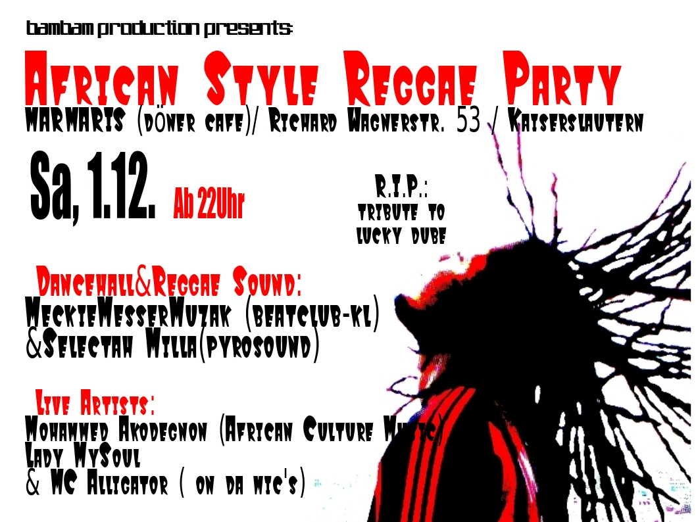

3.0.3 Argentinischer Tango am Vogelwoog
 Letzte Woche noch im Bender, am Sonntag am Vogelwoog: wer “3.0.3 – tango argentinia” verpasst oder nochmal sehen/hören möchte, bekommt ab 17.00 Uhr die Chance..
Letzte Woche noch im Bender, am Sonntag am Vogelwoog: wer “3.0.3 – tango argentinia” verpasst oder nochmal sehen/hören möchte, bekommt ab 17.00 Uhr die Chance..
http://www.myspace.com/303tangofusion
Letzte Woche noch im Bender, am Sonntag am Vogelwoog: wer “3.0.3 – tango argentinia” verpasst oder nochmal sehen/hören möchte, bekommt ab 17.00 Uhr die Chance..
http://www.myspace.com/303tangofusion
 Heute in der Mensa:
Heute in der Mensa:
a la Flashmob und Hamburgersturm Manier wurde heute die Desserttheke der Mensa der TU Kaiserslautern leer gegessen. Es hab kein Pannacotta mehr! Die lecker Desserts wurden teilweise in 13sec verputz – weg, aus, alle! Coole Aktion!
Mehr Bilder und Vids hier:
http://party.unikl.de/cgi-bin/index.cgi?&action=board_showthread&id=7227
28 Millionen verkaufte Hörspiele der Stefan Wolf- Jugendkrimis – das ist echt viel! 12teilige TV-Serie und zwei Kinofilme (Drachenauge – TKKG – Das Geheimnis um die rätselhafte Mind-Machine). Jetzt und hier: vom Autor himself ein neues exklusives Bühnenstück! – Ein Ausflug in den Schauerwald ist ja, könnte man sagen, eigentlich eine blöde Idee. Die TKKG (Tim, Karl, Klößchen und Gabi) können’s aber nicht lassen und – finden sich plötzlich im Angesicht von Tigerkrallen! Das Tier hat dem Zoo Adieu gesagt. In einer unheimlichen Hütte treffen sie andere leichtsinnige Schauerwald-Wanderer, die sich ebenfalls hierher geflüchtet haben. Alle Handys und jedes Gepäck verloren – nur ein Radio, aus dem sie hören: Es gab einen Raubüberfall mit Geiselnahme! So – und nun müssen sie das klären, diese schwierige Detektiv-Sache! (quelle: kammgarn)
Ab 18:00 Uhr Kammgarn, Kasino
Kinder: 12 EUR, Erwachsene: 14 EUR
Eben gerade bei Lokalzeitung-kl.de gelesen:
Am Mittwoch findet zum letzten Mal(!) der Wednesday Night Jazz Club im Step´s statt. Ist das Endgültig? Für immer? Oder nur Pause? Schade, schade.. also, noch einmal alle hin.
Am Donnerstag gibt’s argentinischer Tango live im Bender von der Band “3.0.3”.
Begin: 20.00 UHr, Eintritt glaub frei(?)
http://www.myspace.com/303tangofusion
Der Kaiserslauterer Weihnachtsmarkt ist wieder da! Seit heute ist bis ein Tag vor Heiligabend wieder fröhliches Glühwein trinken und Gewürzkuchen mampfen auf dem Weihnachtsmarkt angesagt. Lecker!
http://www.kaiserslautern.de/leben_in_kl/veranstaltungen/01212/index.html?lang=de
Jazz am Freitag: Jazzbühne meets Electronica in der Fruchthalle.
Wie immer um 16 Uhr Clinic (öffentliche Probe), um 20 Uhr Konzert.
Dabei sind:
Martin Preiser, Piano
Stefan Engelmann, Kontrabass
Michael Lakatos, Schlagwerk
sowie als Gast: David Moufang, DJ/Produzent
http://www.jazzbuehne.de/
Am Samstag: African Style Reggae Party im Hinterraum des Döner Cafe “MARMARIS”. Sounds von:
MeckieMesserMuzak (beatclub-kl)
Selectah Milla(pyrosound)
Live Artists:
Mohammed Akodegnon (African Coulture Music)
Lady MySoul & MC Alligator (on da mic’s)
Begin: 22.00 Uhr
Döner Cafe MARMARIS, Richard Wagnerstr. 53 Kaiserslautern
Eintritt: 3.- Euro
Am heutigen Freitag spielen im Kramladen ab 21 Uhr:
– Steakknife (Punk/Rock/Hardcore, Saarbrücken)
– Stressfaktor (Punk/Hardcore, Landau)
– Sons Of Explosivos (Country/Punk, Mannheim)
Der Eintritt liegt laut dem Magazin Visions im Vorverkauf bei 8 Euro.
 (Nicht nur) für die älteren Leserer unter uns: Am Samstag ist Über 30 Party in der Jean-Schoen Halle Kaiserslautern.
(Nicht nur) für die älteren Leserer unter uns: Am Samstag ist Über 30 Party in der Jean-Schoen Halle Kaiserslautern.
In geschmackvollem Ambiente bei mitreissender Musik, ausgewähltem Fingerfood einer Vielfalt an Getränken und einem spektakulären Showbarkeeper, startet B.U.T Events das Pilotprojekt, das nicht nur jungen Menschen Abwechslung zum Alltag bietet. Quelle: but-kl.de
Beginn: 20:00 Uhr
Eintritt: 6 EUR
Mehr hier: http://but-kl.de/2007/11/07/nachster-event/